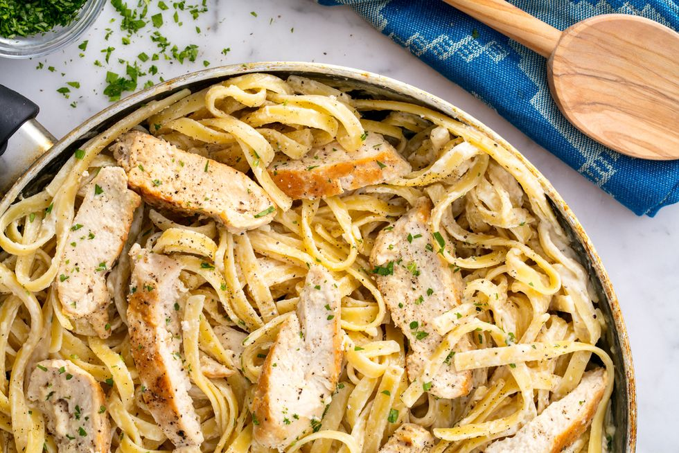

Chicken Alfredo

The Perfect Plate of Chicken Alfredo Right at Home
This is the late night, I want to impress my date meal. It's quick and easy, but you'll look like master chef!
Ingredients
- 2 tablespoon extra-virgin olive oil
- 2 boneless skinless chicken breasts
- kosher salt
- 1 1/2 cup whole milk
- 1 1/2 cup low sodium chicken broth
- 2 cloves garlic, minced
- 8 ounce fetuccini
- 1/2 cup heavy cream
- 1 cup freshly grated parmesan
- freshly chopped parsley, for garnish
Steps
- In a large skillet over medium-high heat, heat oil. Add chicken and season with salt and pepper. Cook until
golden and cooked through, 8 minutes per side. Let rest 10 minutes, then slice.
- Add milk, broth, and garlic to skillet. Season with salt and pepper and bring to a simmer.
Add fettuccine, stirring frequently for about 3 minutes. Let cook until al dente, 8 minutes more.
- Stir in heavy cream and Parmesan until combined. Simmer until sauce thickens.
- Remove from heat and stir in sliced chicken. Garnish with parsley.
Main Page